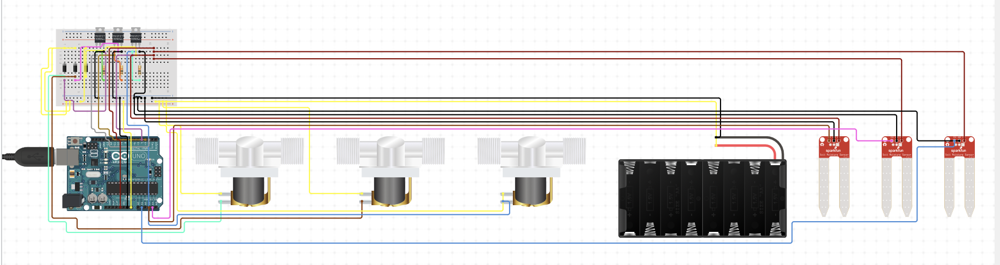
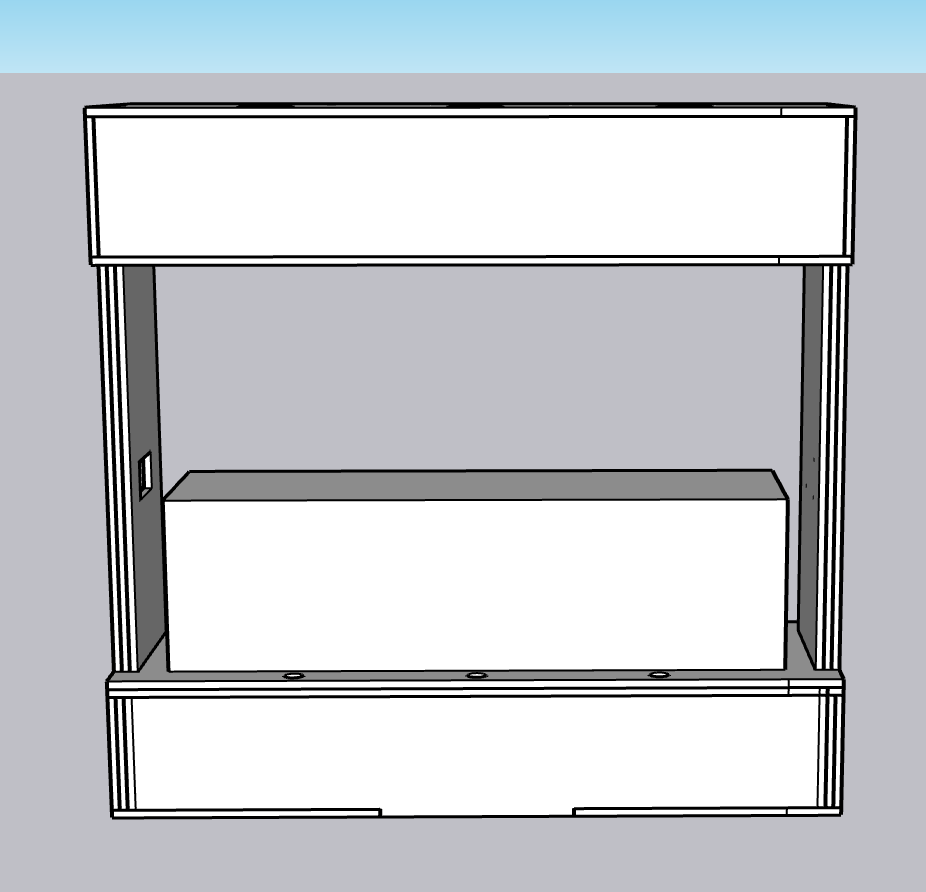
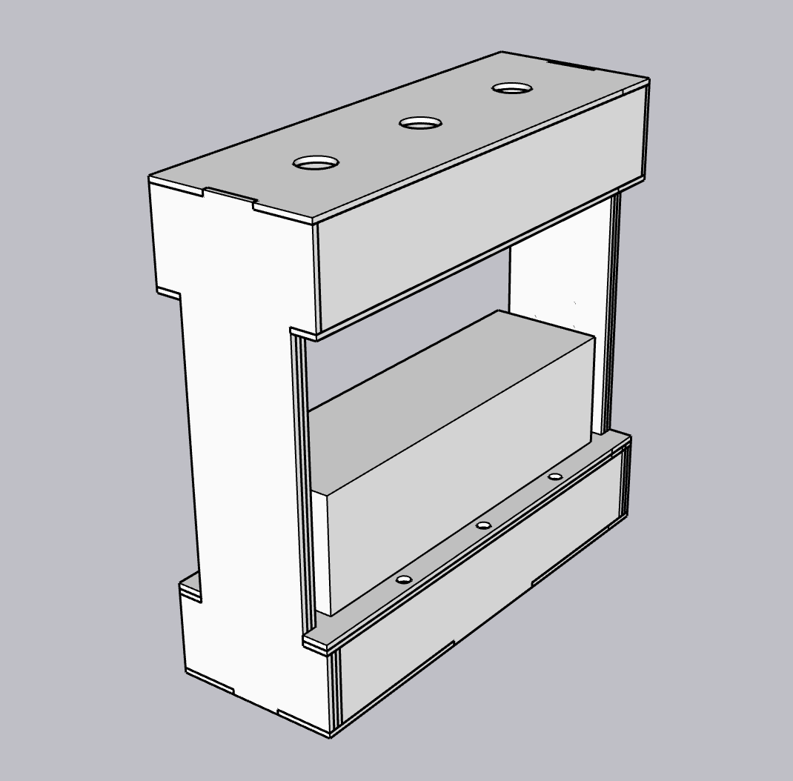
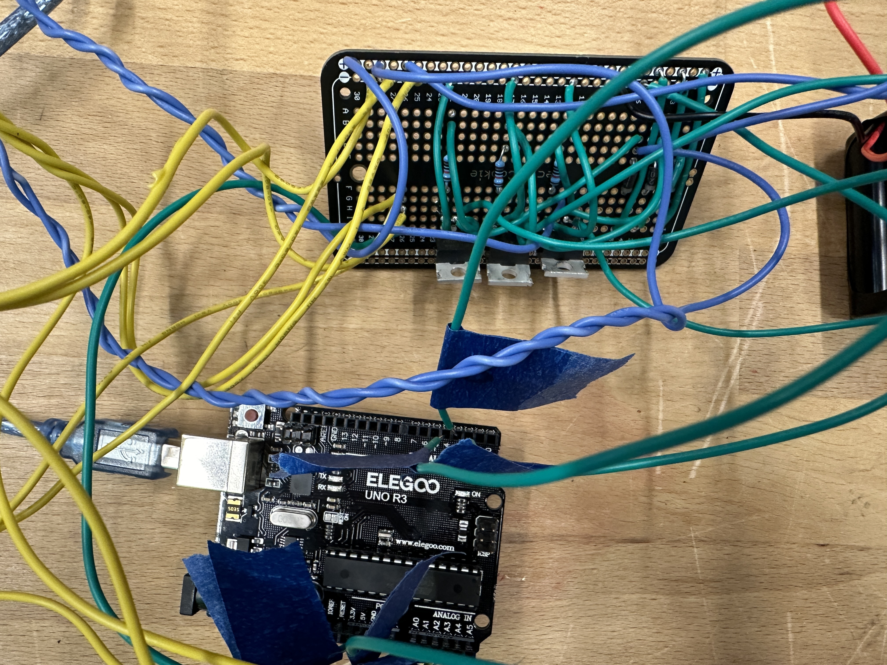

Overview
The plant care system is designed to automatically water plants based on soil moisture. Instead of worrying about your plants while you are on vacation, just fill the tank and watch them grow! I used three soil sensors to detect when a plant needs water. If a plant requires more water, a specific amount will be dispensed. Each plant has its own water threshold value, ensuring the water supply is tailored to each plant's needs.
Improvements
Changes and upgrades based on what I learned from my original prototype.
- 1 Plant → 3 Plants
- Improved fabrication
- Cardboard → Birch Wood
- Increased water tank capacity
- Increased battery longevity
- Better water sealing to reduce leaks
- Better solenoid valves
- Soil sensors come from the base instead of the side to reduce exposed wire
- Increased stability and documentation
- Wires are color coded and labeled with tape
- Header socket added to allow the battery to be easily plugged in and taken out
Materials
- 3 Solenoid Valves: power on = open, power off = closed
- 3 Soil Sensors: provides moisture value
- 1 Arduino Uno
- 1 Protoboard
- 3 Diodes
- 3 Transistors
- 3 10kΩ Resistors
- 1 12V Battery Pack
- Birch Wood + Wood Glue + Hot Glue
Circuit
I used circuito.io to build the circuit diagram, which helped me organize wire routing, identify the best connection paths, and source additional components beyond the main solenoid valve and soil sensor. All parts were then sourced from SparkFun.
Although I primarily followed this circuit diagram, I made a few minor changes during assembly for ease of construction.

Process
- Soldered wires to solenoid valves and tested using an external power source to confirm components worked. Twisted the wires together for better organisation.
- Soldered all components to the protoboard and ensured strong, reliable connections.
- Uploaded test code to verify soil sensors and solenoid valves were working as expected.
Test Code
// Include Libraries
#include "Arduino.h"
#include "SoilMoisture.h"
#include "SolenoidValve.h"
// Pin Definitions
#define SOILMOISTURE_5V1_1_PIN_SIG A3
#define SOILMOISTURE_5V2_2_PIN_SIG A4
#define SOILMOISTURE_5V3_3_PIN_SIG A1
#define SOLENOIDVALVE1_1_PIN_COIL1 2
#define SOLENOIDVALVE2_2_PIN_COIL1 3
#define SOLENOIDVALVE3_3_PIN_COIL1 4
SoilMoisture soilMoisture_5v1_1(SOILMOISTURE_5V1_1_PIN_SIG);
SoilMoisture soilMoisture_5v2_2(SOILMOISTURE_5V2_2_PIN_SIG);
SoilMoisture soilMoisture_5v3_3(SOILMOISTURE_5V3_3_PIN_SIG);
SolenoidValve solenoidValve1_1(SOLENOIDVALVE1_1_PIN_COIL1);
SolenoidValve solenoidValve2_2(SOLENOIDVALVE2_2_PIN_COIL1);
SolenoidValve solenoidValve3_3(SOLENOIDVALVE3_3_PIN_COIL1);
const int timeout = 10000;
char menuOption = 0;
long time0;
void setup() {
Serial.begin(9600);
while (!Serial);
Serial.println("start");
menuOption = menu();
}
void loop() {
if (menuOption == '1') {
int val = soilMoisture_5v1_1.read();
Serial.print(F("Val: ")); Serial.println(val);
} else if (menuOption == '2') {
int val = soilMoisture_5v2_2.read();
Serial.print(F("Val: ")); Serial.println(val);
} else if (menuOption == '3') {
int val = soilMoisture_5v3_3.read();
Serial.print(F("Val: ")); Serial.println(val);
} else if (menuOption == '4') {
solenoidValve1_1.on(); delay(500); solenoidValve1_1.off(); delay(500);
} else if (menuOption == '5') {
solenoidValve2_2.on(); delay(500); solenoidValve2_2.off(); delay(500);
} else if (menuOption == '6') {
solenoidValve3_3.on(); delay(500); solenoidValve3_3.off(); delay(500);
}
if (millis() - time0 > timeout) { menuOption = menu(); }
}
char menu() {
Serial.println(F("\nWhich component would you like to test?"));
Serial.println(F("(1) Soil Moisture Sensor #1"));
Serial.println(F("(2) Soil Moisture Sensor #2"));
Serial.println(F("(3) Soil Moisture Sensor #3"));
Serial.println(F("(4) 12V Solenoid Valve #1"));
Serial.println(F("(5) 12V Solenoid Valve #2"));
Serial.println(F("(6) 12V Solenoid Valve #3"));
while (!Serial.available());
while (Serial.available()) {
char c = Serial.read();
if (isAlphaNumeric(c)) { time0 = millis(); return c; }
}
}Final Code
With all components confirmed working, I wrote the final code to achieve the desired watering functionality, reading each sensor, checking against its moisture threshold, and opening the appropriate solenoid valve for a set duration before entering a cooldown period.
Final Code
// Include Libraries
#include "Arduino.h"
#include "SoilMoisture.h"
#include "SolenoidValve.h"
// Pin Definitions
#define SOILMOISTURE_5V1_PIN_SIG A3
#define SOILMOISTURE_5V2_PIN_SIG A4
#define SOILMOISTURE_5V3_PIN_SIG A1
#define SOLENOIDVALVE1_PIN_COIL1 2
#define SOLENOIDVALVE2_PIN_COIL1 3
#define SOLENOIDVALVE3_PIN_COIL1 4
SoilMoisture soilMoisture_5v1(SOILMOISTURE_5V1_PIN_SIG);
SoilMoisture soilMoisture_5v2(SOILMOISTURE_5V2_PIN_SIG);
SoilMoisture soilMoisture_5v3(SOILMOISTURE_5V3_PIN_SIG);
SolenoidValve solenoidValve1(SOLENOIDVALVE1_PIN_COIL1);
SolenoidValve solenoidValve2(SOLENOIDVALVE2_PIN_COIL1);
SolenoidValve solenoidValve3(SOLENOIDVALVE3_PIN_COIL1);
const int soilMoistureThreshold = 750;
const unsigned long valveOpenDuration = 10000;
const unsigned long coolDownPeriod = 10000;
unsigned long previousTime = 0;
bool coolDown = false;
bool valve1Active = false;
bool valve2Active = false;
bool valve3Active = false;
void setup() {
Serial.begin(9600);
while (!Serial);
Serial.println("start");
}
void loop() {
int soilMoisture1 = soilMoisture_5v1.read();
int soilMoisture2 = soilMoisture_5v2.read();
int soilMoisture3 = soilMoisture_5v3.read();
Serial.print("Soil Moisture Sensor 1: "); Serial.println(soilMoisture1);
Serial.print("Soil Moisture Sensor 2: "); Serial.println(soilMoisture2);
Serial.print("Soil Moisture Sensor 3: "); Serial.println(soilMoisture3);
if (!coolDown) {
if (soilMoisture1 < soilMoistureThreshold && !valve1Active)
activateSolenoidValve(solenoidValve1, valve1Active);
else if (soilMoisture2 < soilMoistureThreshold && !valve2Active)
activateSolenoidValve(solenoidValve2, valve2Active);
else if (soilMoisture3 < soilMoistureThreshold && !valve3Active)
activateSolenoidValve(solenoidValve3, valve3Active);
}
if (coolDown && millis() - previousTime >= coolDownPeriod) {
coolDown = false;
Serial.println("Cool down period over. Resetting system.");
}
delay(1000);
}
void activateSolenoidValve(SolenoidValve& valve, bool& valveActive) {
valve.on();
valveActive = true;
coolDown = true;
previousTime = millis();
delay(valveOpenDuration);
valve.off();
valveActive = false;
}Fabrication
I started by modelling the enclosure in CAD, keeping a similar shape to my previous prototype. After measuring the birch wood thickness (0.205 in), I laser cut the pieces and assembled the enclosure with wood glue.
The main challenge was cutting pieces to the precise dimensions from my CAD model; small tolerances in the laser cutter required a few iterations to get tight-fitting joints.




Final Product
Original Prototype
Final Product